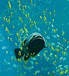

fish

Definition: Fish are aquatic, craniate, gill-bearing animals that lack limbs with digits. Included in this definition are the living hagfish, lampreys, and cartilaginous and bony fish as well as various extinct related groups. Approximately 95% of living fish species are ray-finned fish, belonging to the class Actinopterygii, with around 99% of those being teleosts.
Source: Wikipedia
Wikipedia Page
Wikidata Page
Occurs in: